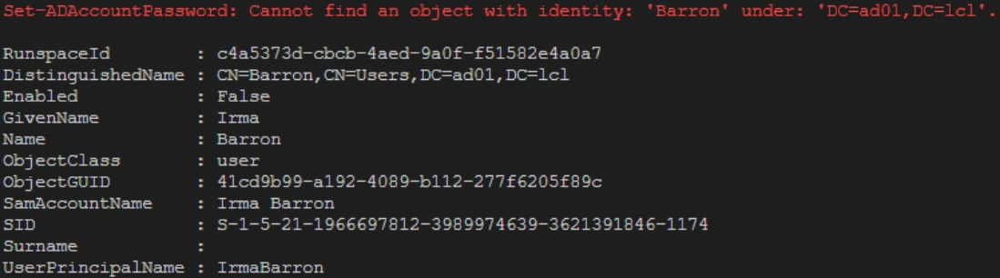
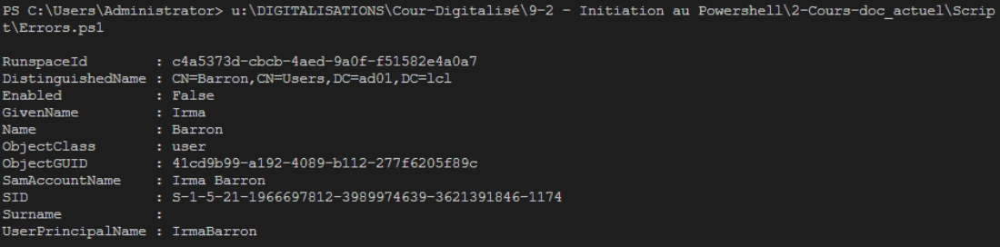
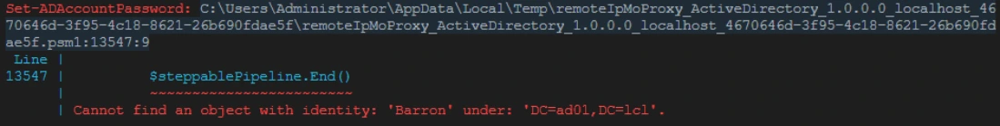
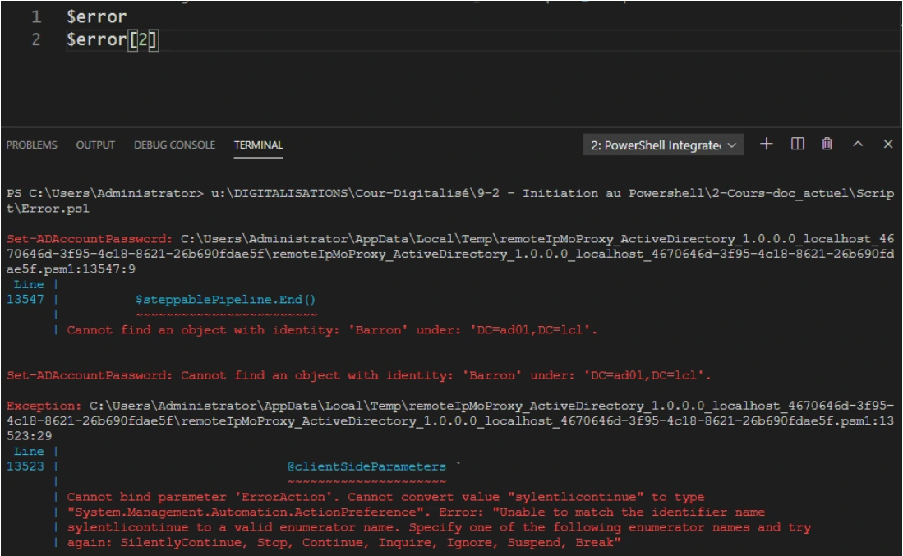
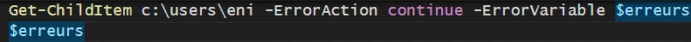
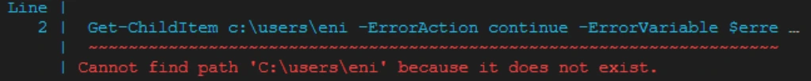
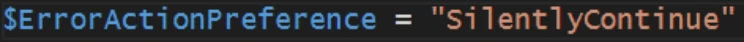

Transcription du support du Drive. Les formulations historiques et les exemples du document sont conservés. Les valeurs d’accès du laboratoire sont indiquées comme « fourni par le formateur ». Les adresses de messagerie personnelles utilisent example.com.
Démonstration 05 du module 5
Une erreur sur une commande peut facilement bloquer toute l’exécution d’un script. L’objectif de cette démonstration est de montrer que toutes les commandes disposent d’un paramètre permettant d’indiquer l’action de la console en cas d’erreur d’exécution d’une commande.
Avec la valeur continue
Avec la valeur SilentlyContinue, l’erreur n’apparaît plus sur la console.
$p = ConvertTo-SecureString -AsPlainText -Force "fourni par le formateur"
Set-ADAccountPassword -NewPassword $p -Identity Barron -ErrorAction Continue
Get-ADUser -Filter * | Where-Object Name -Like "Barron"

La valeur Stop arrête immédiatement l’exécution du script.
Les erreurs, même non affichées dans la console, sont stockées dans une variable $Error.
Le paramètre ErrorVariable permet de spécifier une autre variable.
Il est possible de déterminer le comportement général des erreurs dans la console en modifiant la
variable $ErrorActionPreference.Toutes les erreurs seront affichées, mais ne bloqueront pas l’exécution du script.
Get-ChildItem C:\Users\eni -ErrorAction Continue -ErrorVariable $erreurs
$erreurs
$ErrorActionPreference = "SilentlyContinue"



